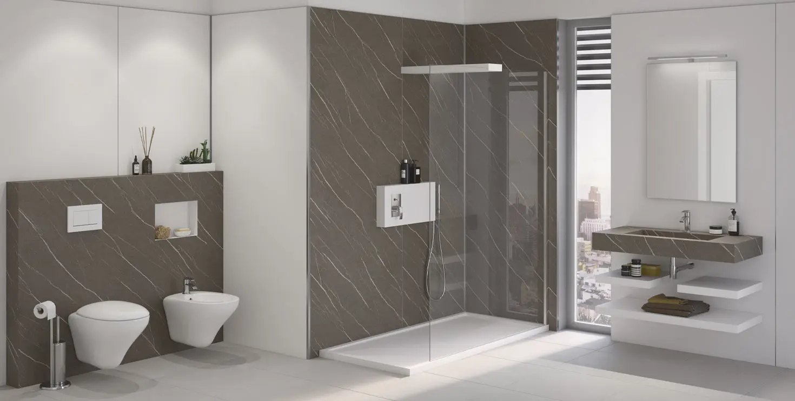
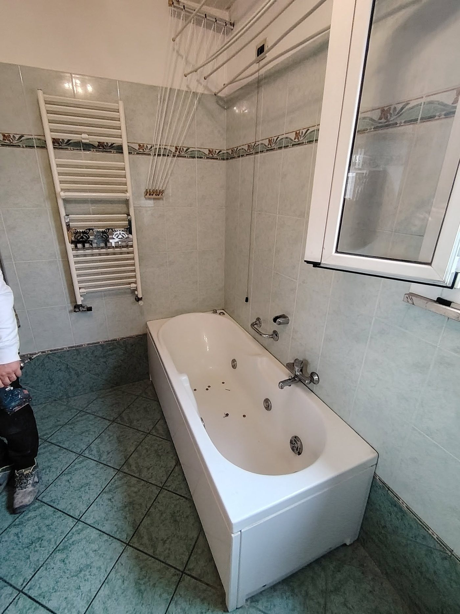
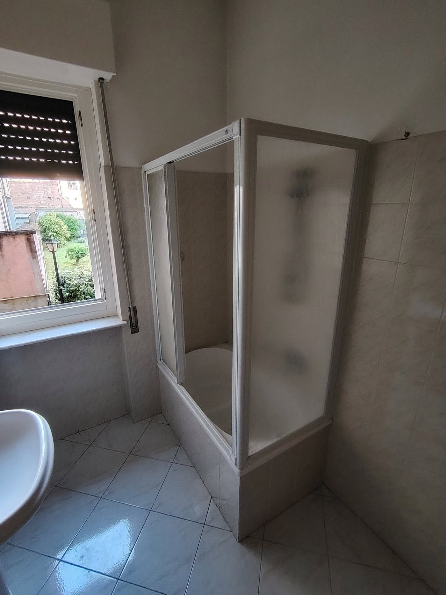
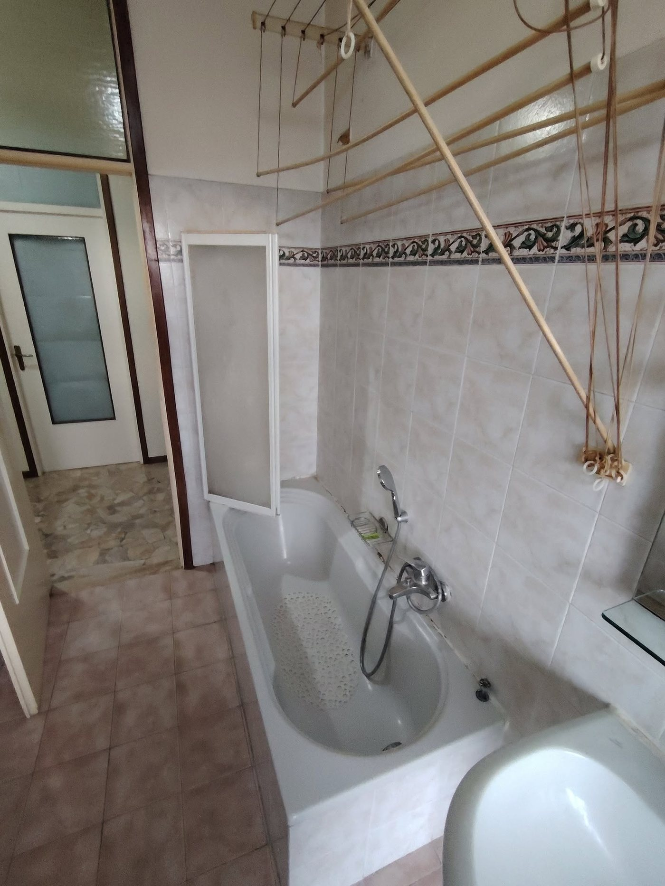
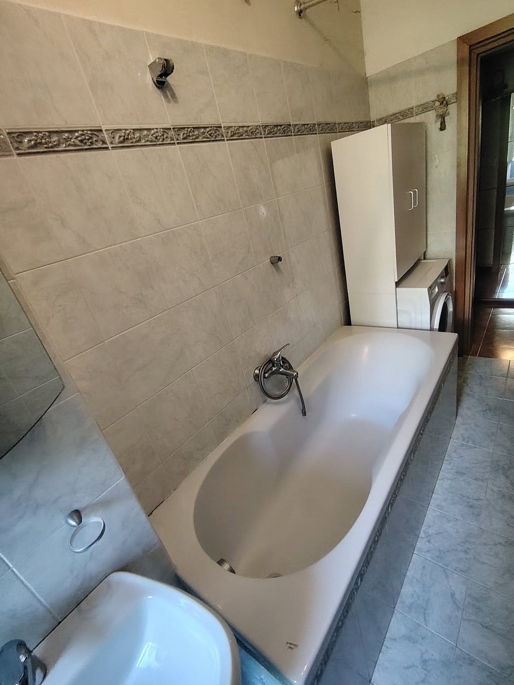

Lavori Realizzati
Bagni rifatti, uno alla volta
Una selezione di interventi recenti: trasformazioni vasca-doccia, rifacimenti completi e installazioni curate nel dettaglio.
Portfolio
Galleria interventi
Trasformazioni
Prima e dopo
Quattro interventi di trasformazione vasca-doccia: stesso bagno, prima e dopo il nostro lavoro.

Trasformazione vasca in doccia
Sostituzione della vecchia vasca idromassaggio con un box doccia in cristallo su misura.

Rifacimento box doccia
Nuovo rivestimento a mosaico e sostituzione completa del box doccia esistente.

Doccia accessibile e sicura
Sostituzione della vasca incassata con una doccia dotata di maniglione di sicurezza.

Rifacimento completo
Nuova vasca sostituita da un box doccia in cristallo, con rivestimenti completamente rinnovati.